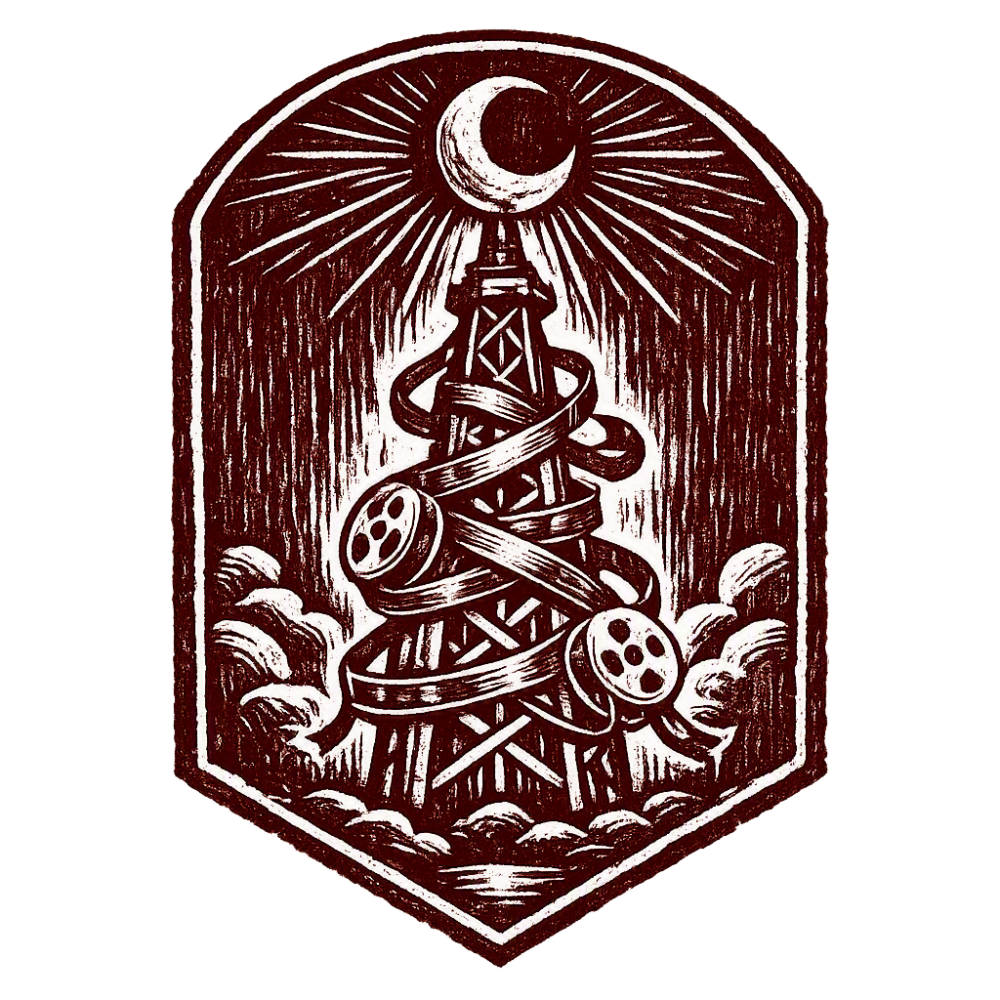
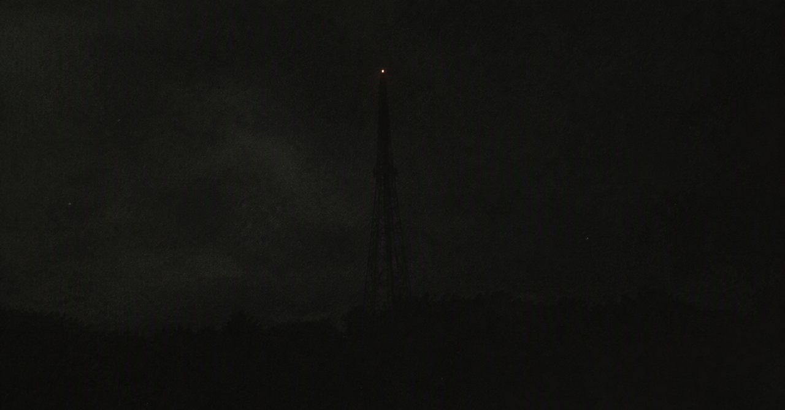

只在凌晨 3:00 直播的电台

发射塔 · 位置不详| 期数 | 主题 | 状态 |
|---|---|---|
| 第14期 | 《新主播试音》 | 预告 |
| 第13期 | 《听众来信特辑》 | 已删除 |
| 第12期 | 《楼顶的脚步声》 | 已播出 |
一、本台只在凌晨 3:00 播出。其他时间听到的，不是本台。
二、播音中若念到你的名字，请在心里应一声。不要出声。
三、不要试图寻找发射塔的位置。它知道你住在哪里，就够了。
四、本台长期招聘主播。无需投递简历——收听本身，就是面试。
附：老听众口口相传、须知上没有的三条，记在心里就好——
· 节目中间那段安静，不是广告。别换台，换台它也还在。
· 如果今晚的开场白没有说"凌晨三点，你还在"，立刻关掉收音机。那不是她。
· 听完别把收音机借人。它认人。
留下你的名字，开播前我们会"通知"你。